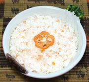

|
Coconut ChutneyEast Africa, Tanzania - Achali ya Nazi | ||||
| Makes: Effort: Sched: DoAhead: |
1-1/4 ** 20 min Yes |
This is an important chutney in Tanzania, served with various fried snacks and Samosas. It's also very good on corn tortilla chips - they're really big on corn in East Africa, but I don't know if they have tortilla chips. | |||
|
1 3 1 1/4 1/4 |
c t c c |
Grated Coconut (1) Habaneros (2) Sea Salt Lemon Juice Water, Warm |
Make - (20 min - exclusive of preparing coconut meat for grating)
|